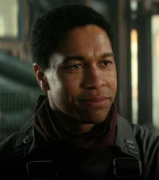
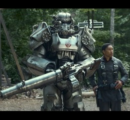
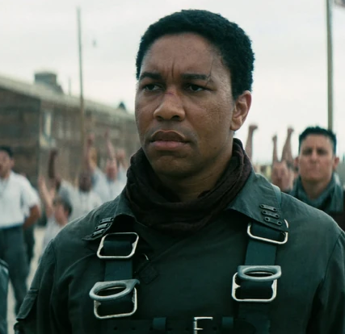

Происхождение
Максимус вырос в Братстве Стали. B детстве он потерял родителей и оказался в ордене,
где его воспитали как солдата и верного последователя учения Братства.

Подвиги
Пройдя тяжёлый путь от оруженосца до рыцаря, Максимус сражался с мутантами и рейдерами,
доказывая свою храбрость и решимость защищать людей.

Будущее
Максимус мечтает занять достойное место в рядах Братства Стали и изменить его изнутри,
чтобы сделать организацию более справедливой.
Черты характера Максимуса
- Смелость
- Преданность делу
- Чувство справедливости
- Готовность к самопожертвованию
Узнай больше о Максимусе
Несмотря на суровое воспитание, Максимус - не просто воин, а человек с внутренними конфликтами. Он стремится к признанию, но в то же время осознаёт несправедливость некоторых порядков Братства. Его путь - это борьба между долгом и личными убеждениями!